Geschichte

 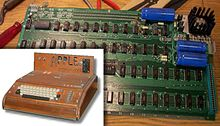
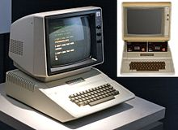
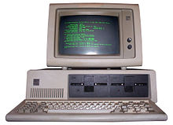
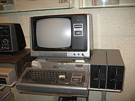
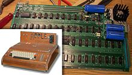
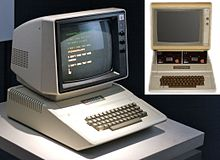
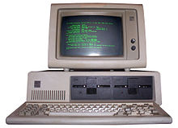
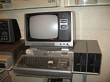
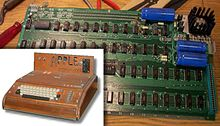
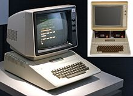
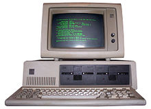
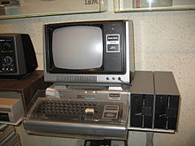
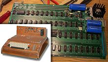
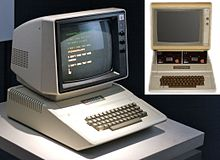
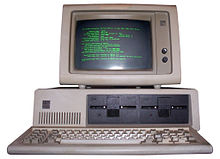
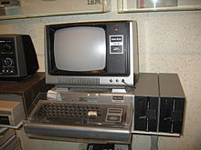
1969
Der erste Mikroprozessor wird von der amerikanischen Firma Intel entwickelt
1974
Die amerikanische Firma MITS (Micro Instrumentation and Telemetry Systems) baut den ersten Minicomputer Altair 8080
1975
Bill Gates (19) gründet mit seinem Partner Paul Allen seine Firma in Redmond. Sie wollen die Programmiersprache BASIC auf den Altair übertragen.
1976
Die Firma Apple wird in Kalifornien gegründet
1977
Der Apple II ist der erste Personal Computer mit Diskettenlaufwerk
1979
Am Palo Alto Research Center (PARC) entwickelt Xerox den ersten Rechner mit Maus und grafischer Benutzeroberfläche, den XeroxStar
1981
Erster IBM-PC mit MS-DOS 1.0 von der Firma aus Redmond
1982
Apple bringt mit Hilfe der Xerox-Erfindung den ersten Rechner mit Maus und grafischer Benutzeroberfläche, Lisa, auf den Markt
1983
Die Firma aus Redmond bringt die Textverarbeitung Word auf den Markt und beginnt mit der Entwicklung von Windows. Erste Maus
1984
Hewlett-Packard zeigt den ersten Laserdrucker mit Technik von Canon. Der Apple-Macintosh kommt auf den Markt. Digital Equipment präsentiert mit Gem die erste grafische Benutzeroberfläche
1985
die Firma aus Redmond verkauft Windows 1.0 für 100 Dollar, es gibt aber zuwenig Anwendersoftware.
1986
Die beiden pakistanischen Brüder Basit und Amjad Alvi bringen den ersten Computervirus in Umlauf, er befällt PC mit dem Betriebssystem MS-DOS
1990
Windows 3.0 wird der Renner und läutet das Ende von MS-DOS ein
1991
Linus Torwalds, ein finnischer Student, beginnt mit der Entwicklung von Linux, einer PC-Variante des Systems Unix. Tim Berners-Lee stellt am Kernforschungszentrum Genf das World Wide Web (WWW) vor.
1994
Der Browser Netscape Navigator macht dasWorld Wide Web populär
1995
die Firma aus Redmond verkauft dank eines gigantischen Werbefeldzugs in den ersten Tagen über 4 Millionen Lizenzen des neuen Betriebssystems Windows 95
1996
US-Robotics bringt den Pilot auf den Markt, den Urahn aller Palm-Organizer. Sun und Oracle wollen mit dem Net-PC, der besonders wartungsarm ist und seine Software über ein Computernetz lädt, das Monopol der Firma aus Redmond brechen. Der Versuch scheitert.
1997
die Firma aus Redmond stellt den Internet Explorer 4 vor, als Gegenstück zu Netscape. Netscape verliert daraufhin den "Browser-Krieg"
1998
Apple kommt wieder ins Rennen mit dem Designer-PC iMac. Mit Computer und Monitor in einem Gehäuse und ohne Diskettenlaufwerk.
2001
Zum Surfen im Internet verwendet man Tablett-PC. Der Computer erobert die Handys. Erste Smartphones kommen auf den Markt